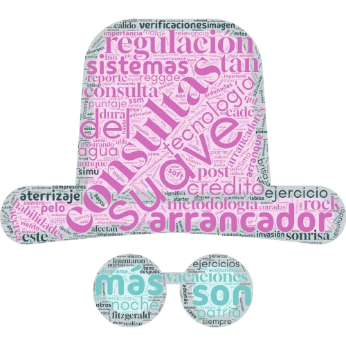

Figure 1 : À partir des contextes liés au mot suave, voici les mots coocurrents représentés sous forme de nuage de mots.
La langue espagnole est très riche. Si vous voyagez dans un pays hispanophone, le sens des mots peut changer d’un pays à un autre, voire d’une région à une autre. Nous pouvons observer ce phénomène même sur le web, sans avoir besoin de voyager.
Pour cette tâche, nous analysons le mot espagnol dans plusieurs contextes et à travers des pays tels que :
L'Espagne
Le Chili
Le Mexique
L'Équateur
L'Argentine
Le Pérou
La Colombie
Dans cette étude, nous nous concentrons sur le mot suave et ses variations (suaves) pour découvrir ses utilisations et connotations dans différents contextes.
Analyse et réflexion
Figure 2 : Les résultats à partir des analyses PALS.
La représentation de ces données est influencée par le fait que les sites technologiques et gouvernementaux avaient une plus grande fréquence d’utilisation du mot suave dans leurs pages, bien que celles-ci soient moins nombreuses. En revanche, les sites de musique, de style de vie et de littérature présentaient une fréquence plus faible du mot dans leurs pages. Cependant, il était plus facile de trouver une plus grande quantité de ces sites, ce qui a attisé ma curiosité.
Prenant en compte les suivantes :
Selon nos résultats, la vie du mot *suave* est très riche, bien que nous ayons uniquement analysé le mot *suave* au singulier et au pluriel.
La plupart de ces données ont été récupérées sur des sites web, principalement dans un contexte informationnel. Ce qui manque dans l'analyse, et qui aurait été intéressant à inclure en tenant compte des contraintes de notre exercice, ce sont des informations sur l'usage du mot dans des contextes de conversations entre internautes. Par exemple, il était difficile de récupérer ce type de données, car les réseaux sociaux ont récemment renforcé les restrictions pour accéder aux publications et discussions des internautes.
Au cours de cet exercice, j'ai découvert à quel point le mot suave peut être riche dans différentes expressions. J'en étais consciente, mais pas à ce point. C'était un exercice très enrichissant, et cela pourrait être intéressant à explorer davantage à l'avenir